🎲导入资源
🎮获取Mirror开发包
先进Unity商城官网里面搜索Mirror，第一个就是。
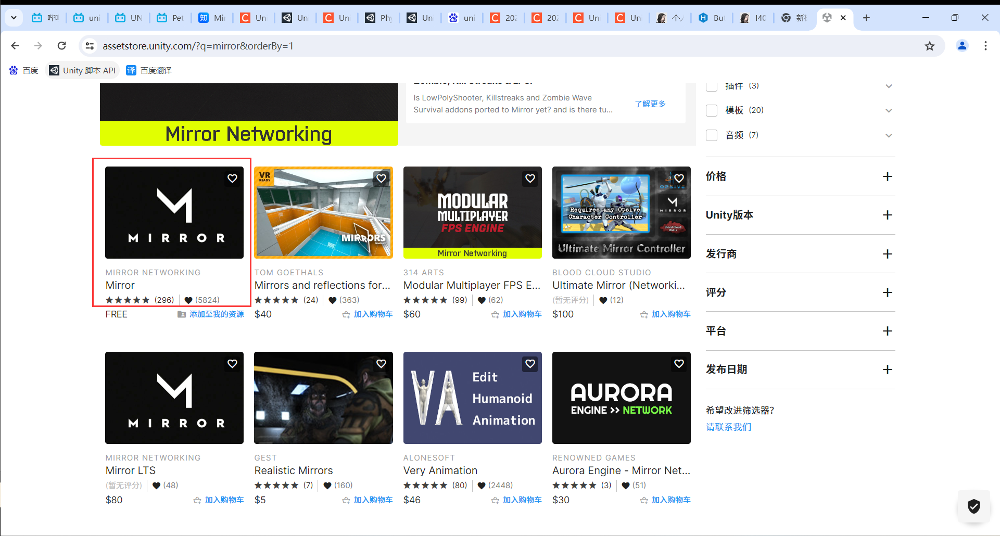
然后添加到我的资源
🎮导入Mirror开发包
打开Unity新建一个默认的3D模板
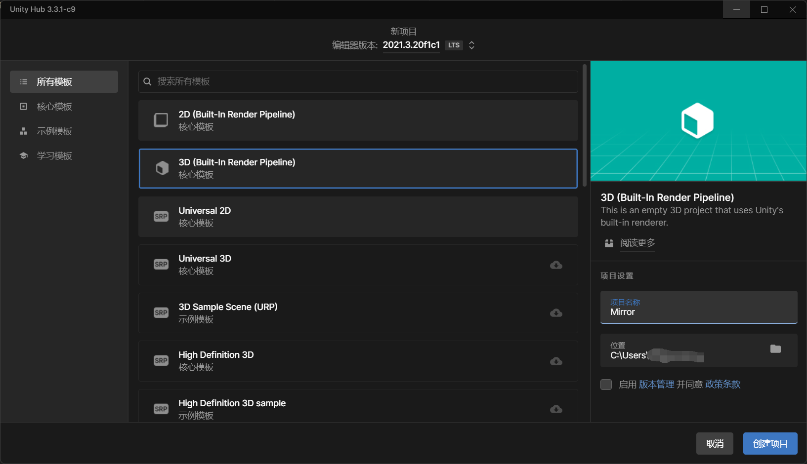
然后打开Window→Package Manager,在新窗口的上方选择My Assets(如果选择以后显示There are no assets.那就点下面的刷新多试几次),找到Mirror后下载，然后导入。
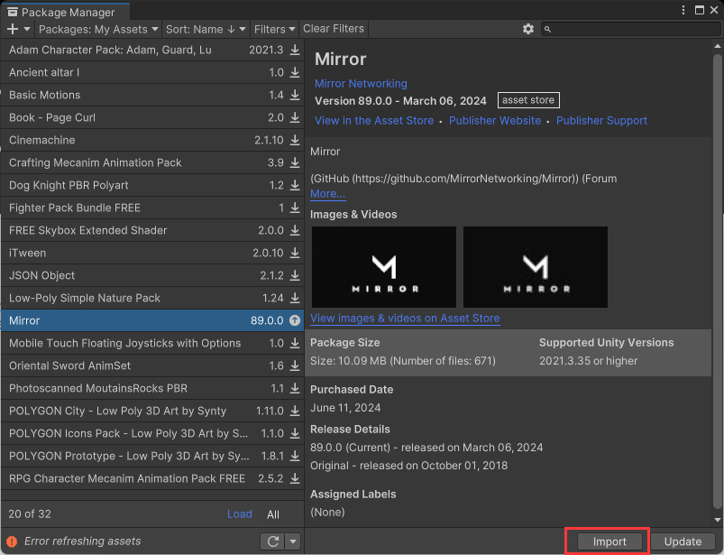
导入的时候会问你是否要安装依赖项，选择安装
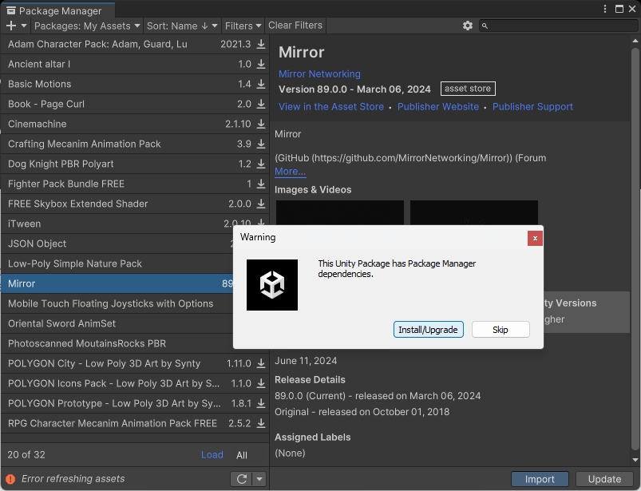
最后直接导入就可以
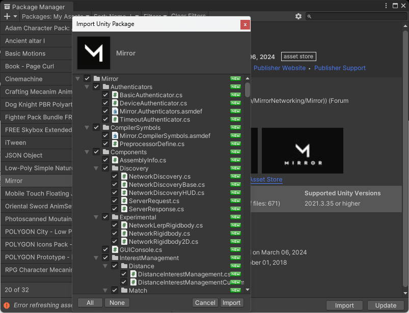
🎲基本实现
🎮建立简单的交互场景
首先在场景里面创建一个空物体，然后命名为NetworkManager，依次添加Network Manager、Kcp Transport、NetWork Manager HUD组件
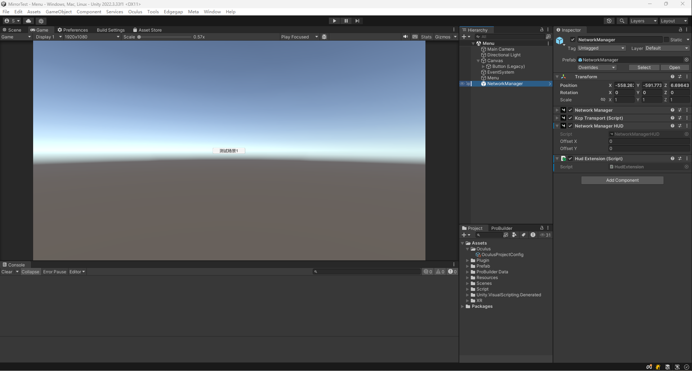
然后找到Network Manager组件的Network Info下的Transport属性,把刚刚创建的NetworkManager物体拖拽进去(因为之前老版本的时候添加Network Manager组件会自动添加Kcp Transport,当前这个版本不会自动添加，所以需要手动添加然后拖拽上去)
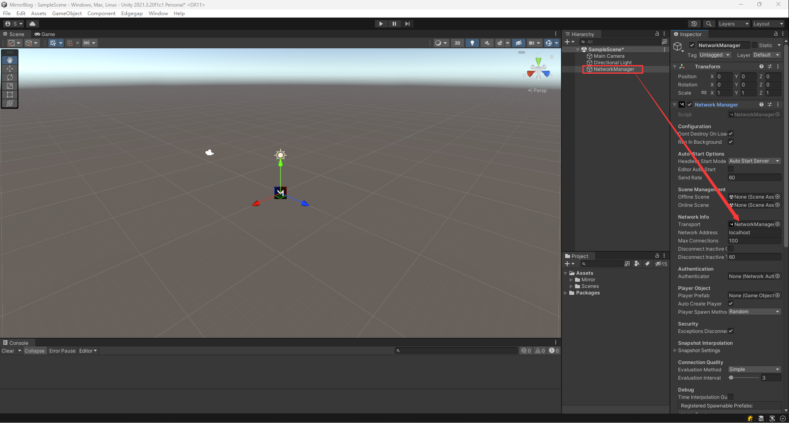
导入入ProBuilder插件（用于建立基础的交互场景），方法跟导入Mirror的时候一样只不过ProBuilder在Unity Registry里面
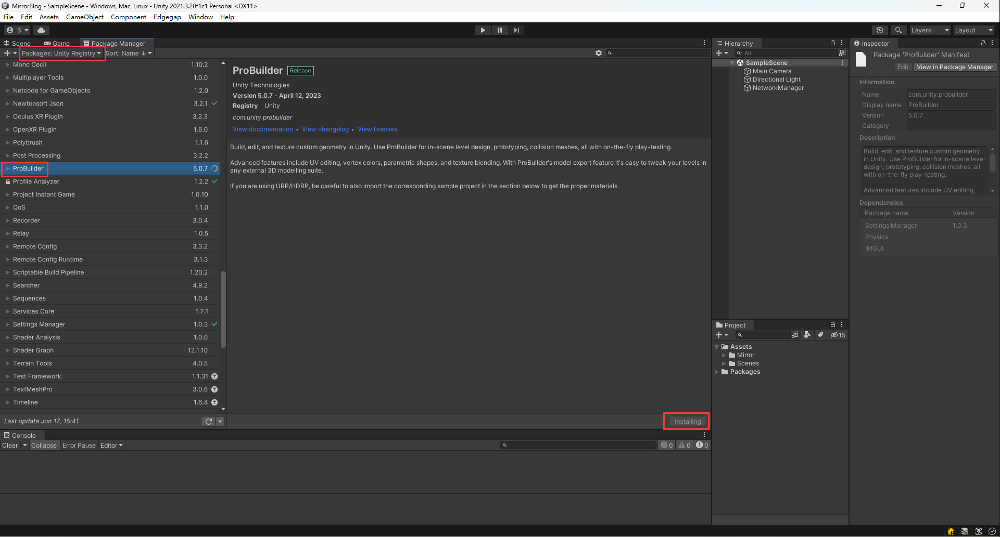
然后点击安装，安装完成以后点击Tools→ProBuilder→ProBuilderWindow把ProBuilder窗口打开，接着利用ProBulider创建好交互场景，博主这边做的比较简单就搭了个场景
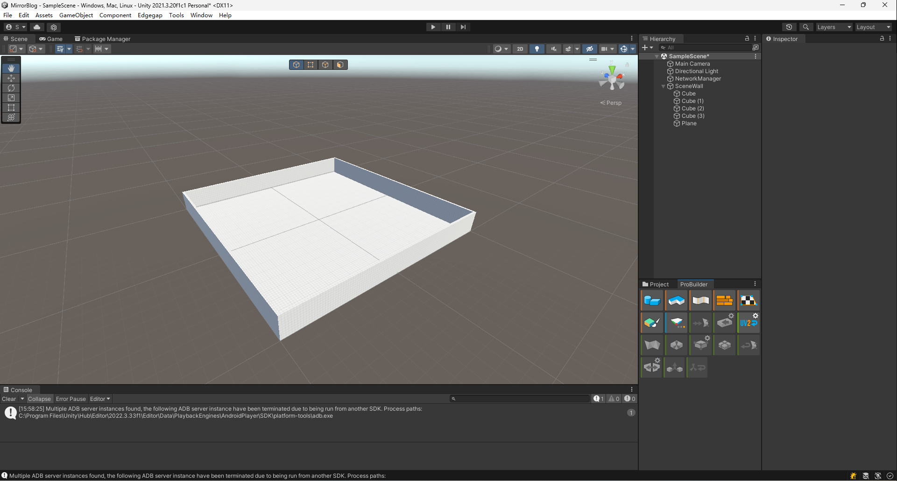
右击新建空物体并命名为StartPoint，然后添加NetWork Start Position组件，这个就是联机时重生点，可以多建几个，博主这边建了两个，然后放在不同的位置（别忘了把Y轴改为1要不然玩家会有一半出生再地底下）。
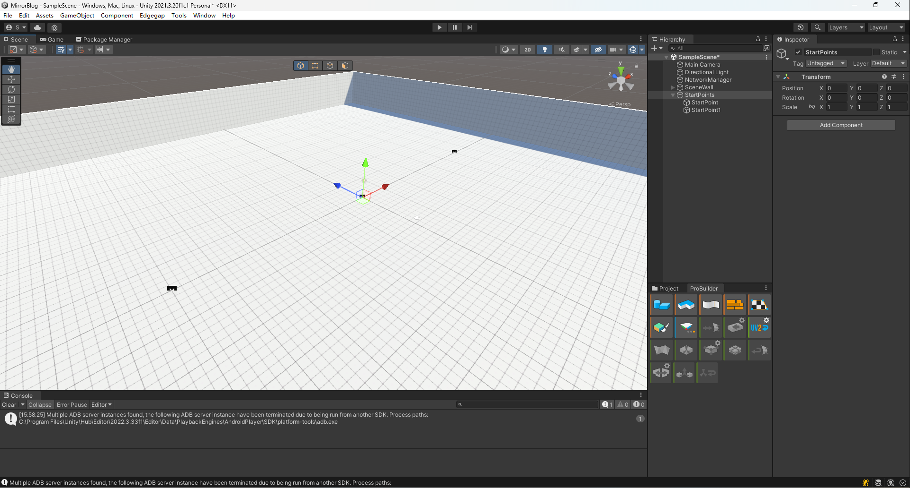
🎮Player控制器
导入Cinemachine来作为第三人称视角控制器方法和之前导入ProBulider一样
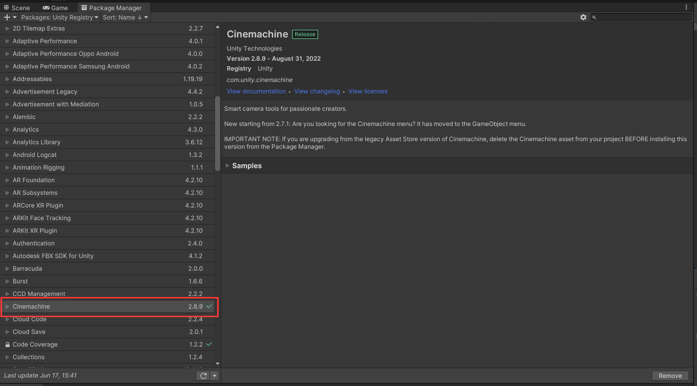
用ProBuilder建立一个物体当Player（博主比较喜欢方方正正的就直接用方块了）,然后要做成Prefab。
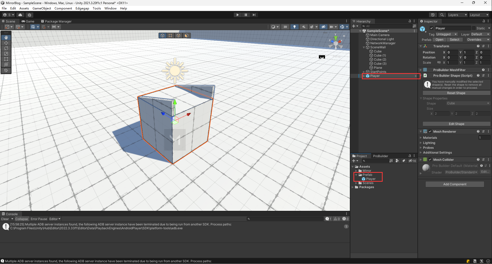
右键→ChineMachine→CM FreeLook来建立一个第三人称视角的相机，然后找到Orbits一栏按照下图方式修改（这个是根据玩家模型来调整的，不一定要跟博主的一样）
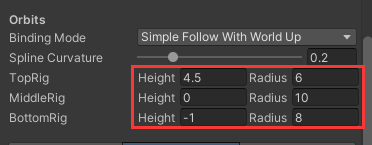
新建一个脚本叫PlayerControl来控制玩家
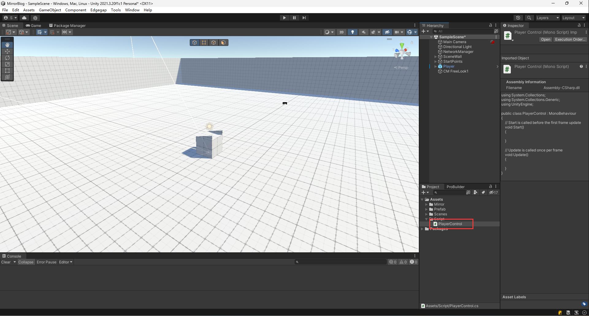
脚本如下别忘了把MonoBehaviour改成NetworkBehaviour
1
2
3
4
5
6
7
8
9
10
11
12
13
14
15
16
17
18
19
20
21
22
23
24
25
26
27
28
29
30
31
32
33
34
35
36
37
38
39
40
41
42
43
44
45
46
47
48
49
50
51
52
53
54
55
56
57
58
59
60
61
62
63
64
65
66
67
68
69
70
71
72
73
74
75
76
77
78
79
80
81
82
83
84
85
86
87
88
89
90
91
92
93
94
95
96
97
98
99
100
101
102
103
104
105
106
| using Mirror;
using System.Collections;
using System.Collections.Generic;
using UnityEngine;
using Cinemachine;
using UnityEngine.UI;
public class PlayerControl : NetworkBehaviour
{
/// <summary>
/// 移动速度
/// </summary>
public float moveSpeed = 5;
/// <summary>
/// 摄像机
/// </summary>
[HideInInspector]
public Transform cameraTransfrom;
[HideInInspector]
public float currentVelocity;
/// <summary>
/// 人物转向平滑值
/// </summary>
public float smoothTime = 0.3f;
/// <summary>
/// 第三人称摄像机
/// </summary>
[HideInInspector]
public CinemachineFreeLook playerCamera;
public override void OnStartLocalPlayer()
{
//将主相机绑定
cameraTransfrom = Camera.main.transform;
playerCamera = GameObject.Find("CM FreeLook").GetComponent<CinemachineFreeLook>();
playerCamera.Follow = transform;
playerCamera.LookAt = transform;
playerCamera.m_YAxis.Value = 1f;
CursorHideAndCenter();
}
// Update is called once per frame
void Update()
{
//如果不是客户端就不走
if (!isLocalPlayer)
{
return;
}
//获取是否有移动键输入
Vector2 input = new Vector2(Input.GetAxisRaw("Horizontal"), Input.GetAxisRaw("Vertical"));
Vector2 inputDir = input.normalized;
//获取旋转角度
float targetRotation = Mathf.Atan2(inputDir.x, inputDir.y) * Mathf.Rad2Deg + cameraTransfrom.eulerAngles.y;
//如果触发了按键
if (inputDir != Vector2.zero)
{
transform.eulerAngles = Vector3.up * Mathf.SmoothDampAngle(transform.eulerAngles.y, targetRotation, ref currentVelocity, smoothTime);
transform.Translate(transform.forward * moveSpeed * Time.deltaTime, Space.World);
}
}
/// <summary>
/// 摄像机停止移动
/// </summary>
public void CameraStop()
{
playerCamera.m_YAxis.m_MaxSpeed = 0;
playerCamera.m_XAxis.m_MaxSpeed = 0;
}
/// <summary>
/// 摄像机开始移动
/// </summary>
public void CameraStart()
{
playerCamera.m_YAxis.m_MaxSpeed = 3;
playerCamera.m_XAxis.m_MaxSpeed = 300;
}
/// <summary>
/// 隐藏并锁定鼠标
/// </summary>
public void CursorHideAndCenter()
{
Cursor.lockState = CursorLockMode.Locked;
Cursor.visible = false;
}
/// <summary>
/// 显示并解锁鼠标
/// </summary>
public void CursorShow()
{
Cursor.lockState = CursorLockMode.None;
Cursor.visible = true;
}
}
|
编辑Player预制体，添加Network Identity组件和Network Transform(Reliable)组件，并把刚刚写的脚本附上去
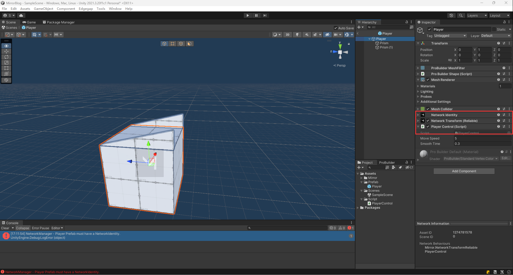
再从场景中把player预制体删除，之后再找到NetworkManager把当前场景赋予到OfficeScene和OnlineScene上，把Player预制体赋予到Player Prefab上
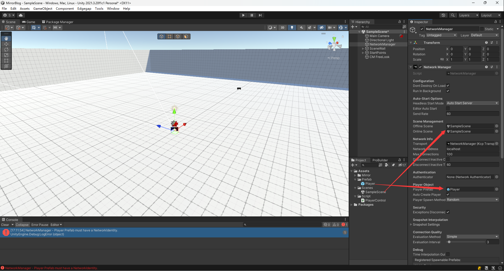
🎮发布测试